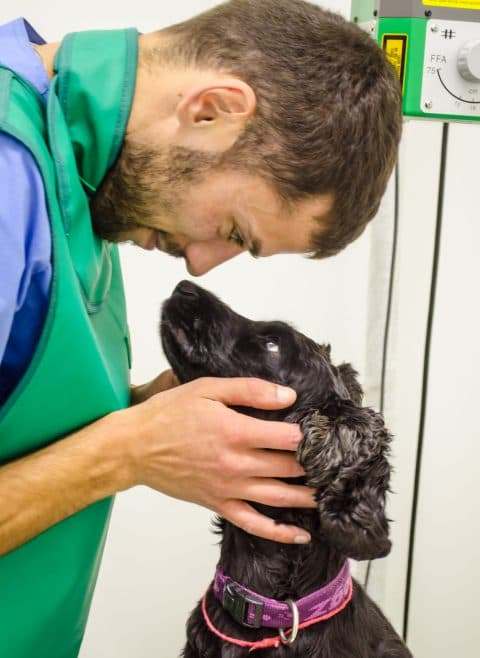

Терапия – это лечение разных заболеваний животных и разного рода профилактические мероприятия, которые направлены на предупреждение возникновения и развития прогрессирующих заболеваний почек, сердца, пищеварительного тракта и других органов и систем. Врач-терапевт – это первый ветеринарный специалист, который проведет осмотр Вашего питомца. Ему Вы расскажете обо всех проблемах, которые Вас беспокоят: о том, почему привели Вас на прием животное, о заболеваниях, которые были ранее, об особенностях его содержания и питания. В свою очередь, врач соберет полный анамнез – это информация о жизни животного и о его болезни. И даже если некоторые вопросы, задаваемые врачом, могут показаться не очень незначительными, то необходимо вспомнить и дать наиболее полный ответ, т.к. правильно собранная информация критически важна для терапевта. Это позволит своевременно поставить диагноз и обеспечить быстрейшее выздоровление.

Затем ветеринар-терапевт проведет клинический осмотр, если потребуется, то назначит дополнительные диагностические процедуры и исследования. В нашей клинике DogHome мы проводим:
- 1)УЗИ органов брюшной полости
- 2)эндоскопическое исследование
- 3)лабораторные исследования (анализы мочи, крови, кала, тесты на определение групп крови, тесты на инфекционные заболевания, паразитарные и дерматологические исследования и др.)
- 4)УЗИ сердца (ЭхоКГ ), ЭКГ
В процессе установления диагноза Вас могут направить к специалисту нашей клиники более узкого профиля, например к дерматологу, кардиологу, хирургу, офтальмологу и т.д. На основании всей этой полученной информации животному назначат грамотное лечение, а также дадут подробную консультацию по дальнейшему содержанию и уходу в период выздоровления. В большинстве случаев необходимы повторные визиты к терапевту, т.к. врач будет проводить оценку состояния животного во время лечения, наблюдать за изменениями в состоянии питомца и ответ организма на лечение, контролировать результаты анализов,. Почему важно иметь постоянного лечащего врача? Потому, что всякую болезнь, легче профилактировать, чем лечить. Регулярные осмотры и диагностические мероприятия помогут выявить и предотвратить болезни на ранней стадии. Если животное имеет какие-то хронические заболевания, то обращаться к врачу придется регулярно, для контроля состояния. Помните, что бы продлить жизнь и сохранить здоровье животному, желательно соблюдать простые правила:
- 1)Проводить вакцинацию ежегодно и своевременно
- 2)Не контактировать с больными животными
- 3)Соблюдать правила гигиены и режим питания